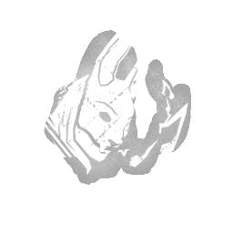

咒术：女猎手摇篮曲 Hex: Huntress Lullaby
所属：女猎手（杀手）
| 等级 | 档位 1 | 档位 2 | 档位 3 |
|---|---|---|---|
| 数值 | 2 4 | 4 | 6 |
描述
一个以绝望为根基的厄咒。你的猎杀是一首不可抗拒的恐惧之歌，扰乱猎物的注意力。进行治疗或修理动作的逃生者会受到以下效果影响：技能检验失败时的进度惩罚增加 2/4/6 %。每次有逃生者被钩住，厄咒：女猎手摇篮曲的力量就会增强并获得 +1 个印记，最多可叠加至 5 个印记。进行治疗或修理动作的逃生者会受到以下额外效果影响：缩短即将到来的技能检验的音频提示与实际出现之间的时间，具体取决于累积的印记数量：1 个印记：-14 % 2 个印记：-28 % 3 个印记：-42 % 4 个印记：-56 % 5 个印记：完全屏蔽音频提示。厄咒效果会持续生效，直到厄咒图腾被逃生者祝福或净化，从而在该对局的剩余时间内被禁用。“那首歌，简直让我发疯！”